Motivation
Airbnb is an online vacation rental marketplace servicing a community of hosts and travellers. Hosts are able to list their space for rental to travellers anywhere in the world. The data generated by Airbnb provides rich information, including structured data such as price and location, as well as unstructured data such as reviews and listing descriptions. Current statistical and analytical tools like SAS JMP are often subscription-based and require technical knowledge to mine and draw insights from. This project aims to overcome these hurdles by developing an app which is concise, interactive, and user-friendly regardless of one’s technical ability. Thus, with our app, anyone and everyone would be able to make data-based decisions effortlessly.
Objective
This project aims to utilise various R packages, mainly TidyText, TidyModels and ggstatsplot, to build an interactive R Shiny application that serves as an integrated platform which allows users to perform the following analysis:
-
Text Analysis
-
Exploratory and Confirmatory Data Analysis
-
Predictive Analytics
Application Use case
- Hosts: In 2014, Airbnb launched the Superhost programme to reward hosts with outstanding hospitality. As a Superhost, one will have better earnings, more visibility, and are able to earn exclusive rewards such as increased earnings compared to regular hosts. To become a Superhost, these are the criteria to be met:
-
4.8 or higher overall rating based on reviews
-
Completed at least 10 stays in the past year or 100 nights over at least 3 completed stays
-
Less than 1% cancellation rate, not including extenuating circumstances
-
Responds to 90% of new messages within 24 hours.
- Guests: With over 60,000 members and 6000 properties listed on Airbnb website, a dilemma on which is the right space might be of concern to users.
Hence, this dashboard allows users to analyse their needs and compare across other listings.
Data
Dataset used is obtained from Inside Airbnb. In particular, we extracted the following files:
- listing.csv.gz: This dataset consists of 74 variables and 4256 data points.
- Reviews.csv.gz: This dataset provides 6 variables and 52368 data points.
The location is Singapore, with latest date compiled on 27 January 2021.
Proposed Analytical Methods and Visualisation
Map
To show the distribution of listings in Singapore. The intensity of colour can be used to highlight price range, superhost, room type, etc.
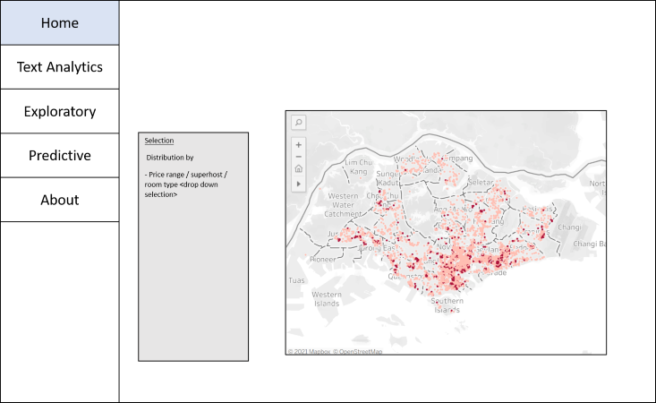
Word Cloud
To explore the frequency of textual data of reviews and listings. This allows users to identify the words that are most commonly associated (proportionate to size) with a particular listing / neighbourhood, etc.
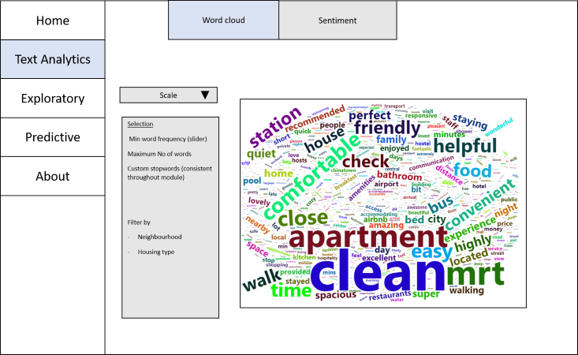
Sentiment
To identify positive and negative words associated with the listings, cloud comparison is used.
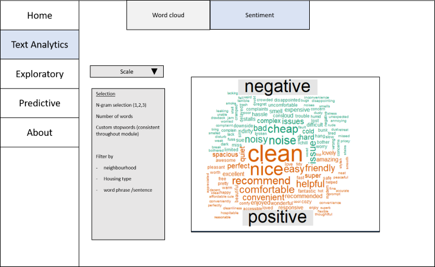
Exploratory Data Analysis
To explore the Airbnb dataset and identify interesting trends with the interactive visualization.
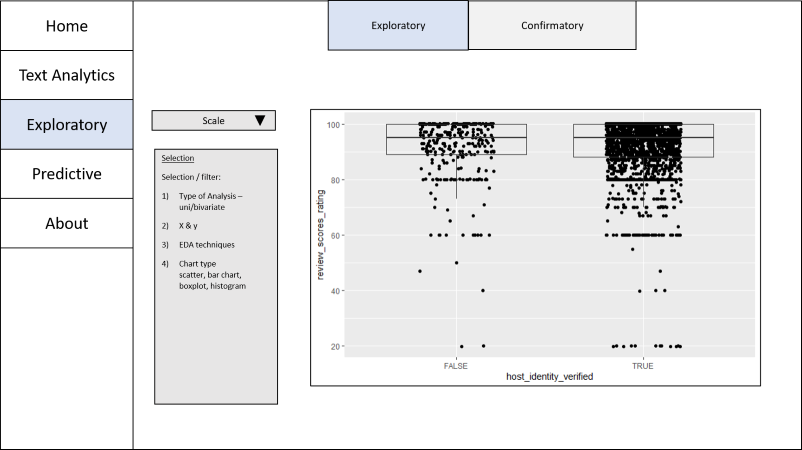
Confirmatory Data Analysis
To perform statistical test on listings data to augment findings found in the “Exploratory” tab.
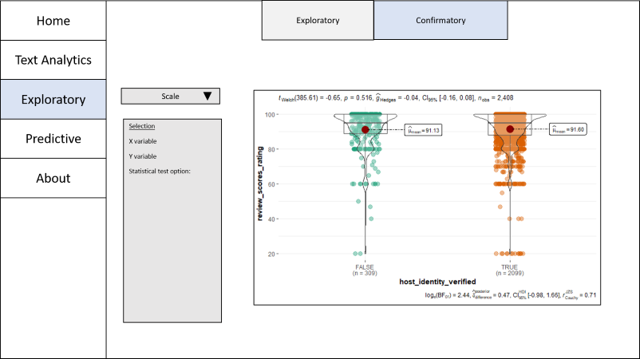
Distribution of variables
To have better understanding of the variables and their potential to be a predictor of a response variable (price/rating), predictive analysis with different model types can be done.
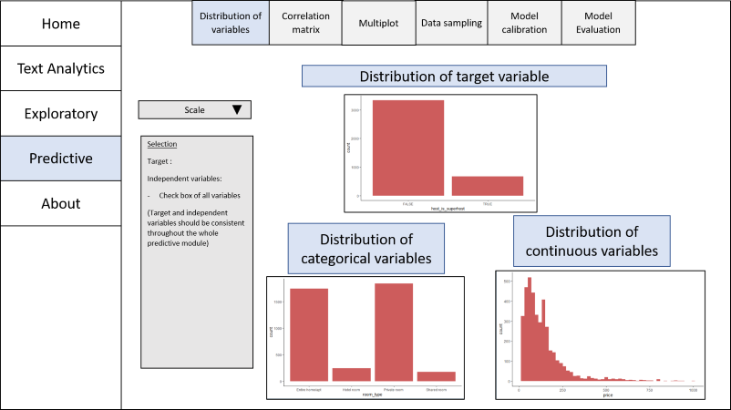
Correlation matrix
To visualise the relationships between the independent variables and check for signs of multi-collinearity among the independent variables. Highly correlated variables to be excluded from the model.
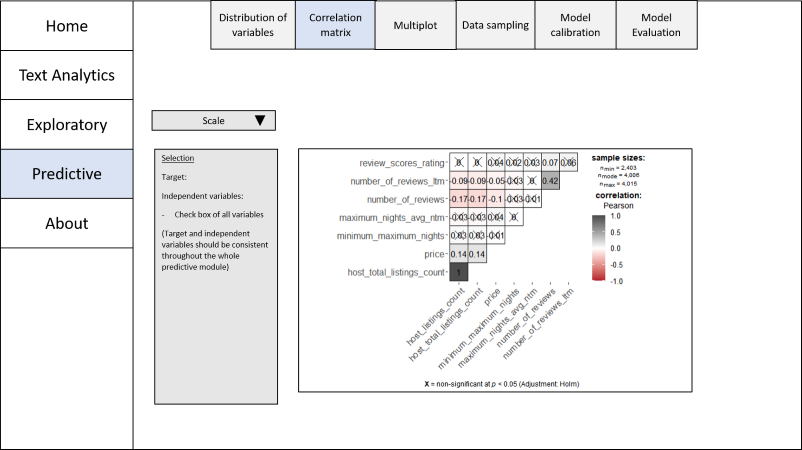
Multiplot
To check for any signs for complete and/or quasi-complete separation, which must be excluded from the predictive model as they will prevent the convergence of the maximum likelihood estimates for the coefficient and ultimately distorting the model.
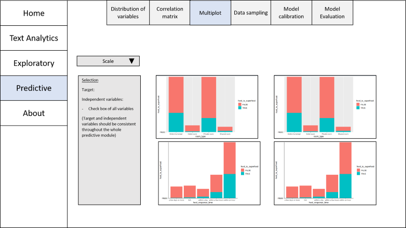
Data splitting and sampling
To partition the data into training/test/validation sets and apply selected cross validation.
Note: Percentage of target must be proportionate across the different dataset.
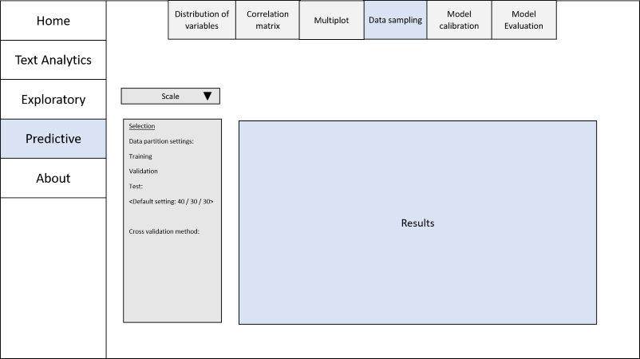
Model calibration
To select calibrate different classification and regression models.
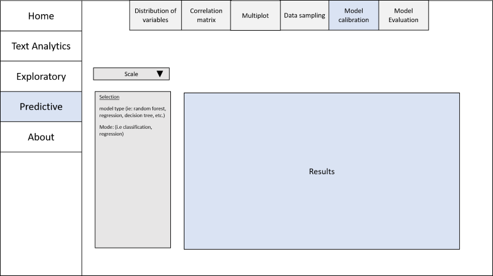
Model evaluation
To select assessment method for model, compute confusion matrix and display variable importance of selected model.
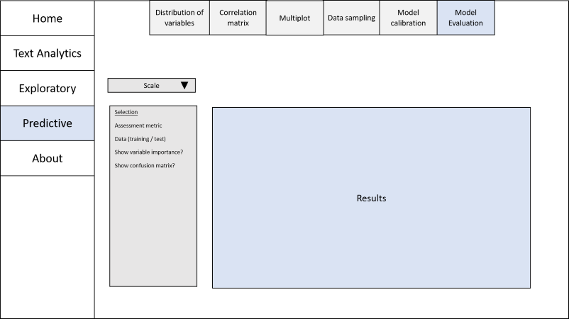
Proposed R Packages
| Packages | Purpose |
|---|---|
| Tidyverse | For data manipulation |
| cld3 | To filter out non-English observations |
| Tidytext | For processing textual data |
| wordcloud | To create word cloud |
| Plotly | Create interactive plots for exploratory analysis |
| ggstatsplot | Create plots with statistical tests included within plot |
| Tidymodels | Build prediction models |
Revelant work
Bion R, Chang R, Goodman J. 2017. How R helps Airbnb make the most of its data. PeerJ Preprints 5:e3182v1 https://doi.org/10.7287/peerj.preprints.3182v1
Lu, Y., Garcia, R., Hansen, B., Gleicher, M., & Maciejewski, R. (2017). The State-of-the-Art in Predictive Visual Analytics. Computer Graphics Forum, 36(3), 539–562. https://doi-org.libproxy.smu.edu.sg/10.1111/cgf.13210
Scrivner, Olga & Chakilam, Vinita & Poojary, Jivitesh & Sahoo, Nilima & Uppuluri, Chandan & De Spiegeleire, Stephan. (2017). Building Customized Text Mining Tools via Shiny Framework: The Future of Data Visualization.
Staniak, M., & Biecek, P. (2019). The Landscape of R Packages for Automated Exploratory Data Analysis. R J., 11, 347.